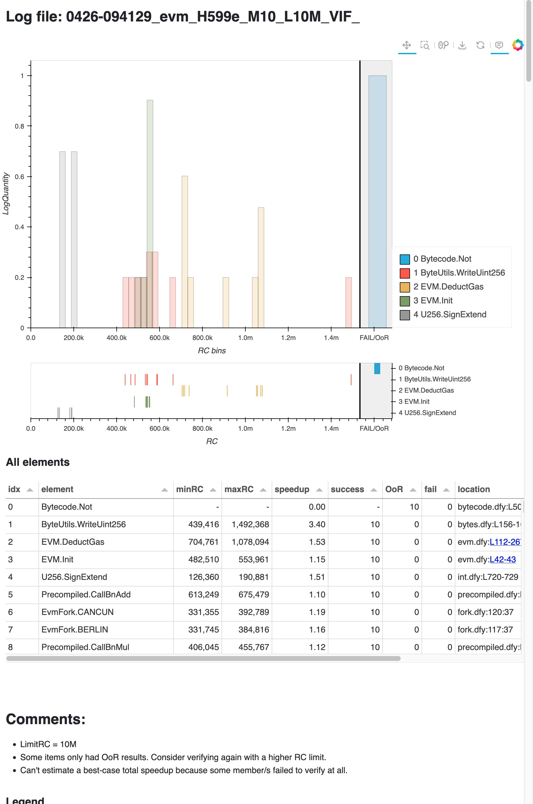
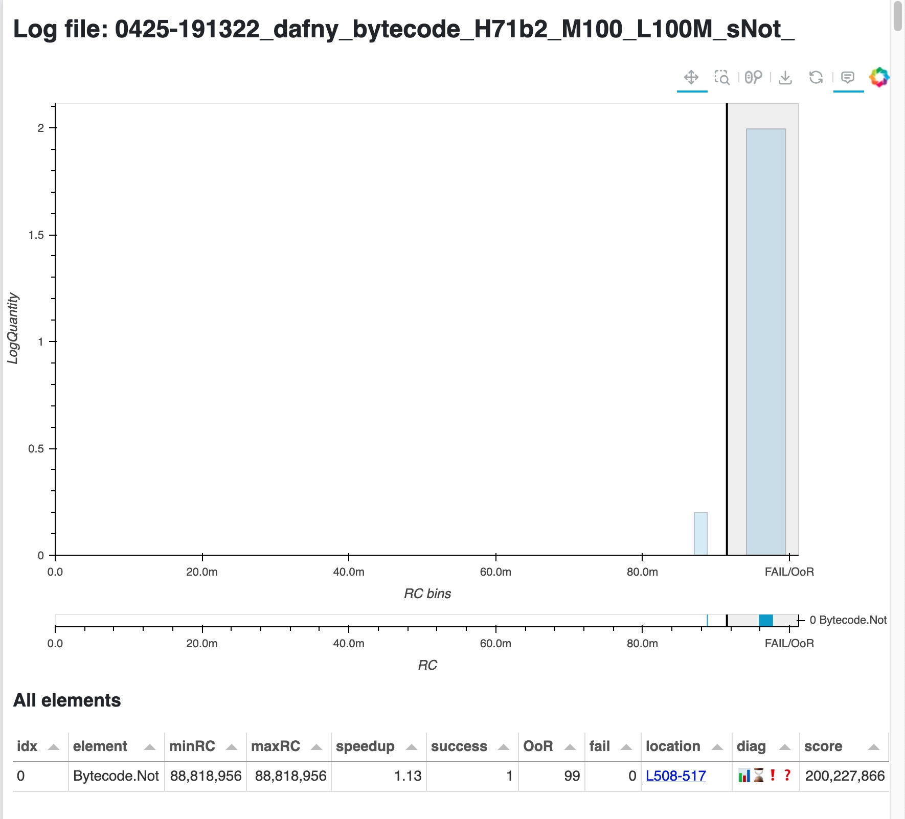
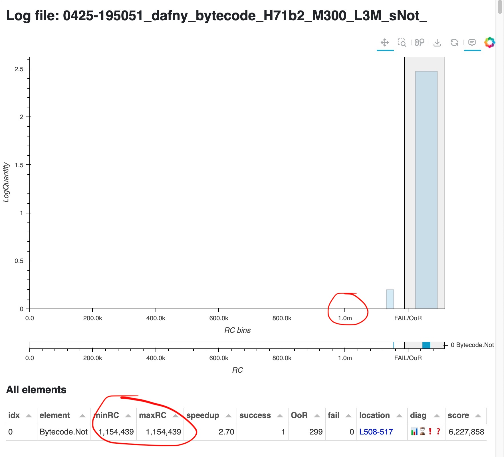
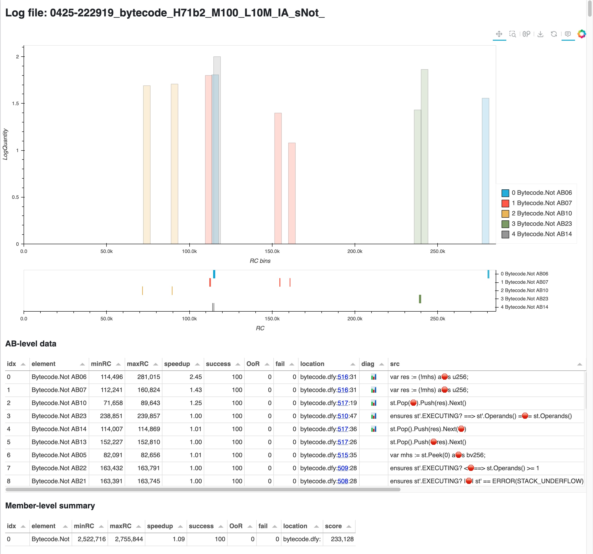

A quick walkthrough of using DARUM to find and fix brittleness¶
How would you use DARUM on your own Dafny project? Let’s walk through the process of verifying Consensys’ DafnyEVM project. We’ll focus on the tools and barely get into the underlying concepts; for explanations please check the Details document in this repo, or the gentler introduction in the blog post.
This walkthrough was done with DARUM 1.0, Dafny 4.10 and Z3 4.14.1.
Check the whole project¶
The first step could be as simple as verifying your project with DARUM’s dafny_measure instead of dafny. In the DafnyEVM we used a Gradle-based build process, which boiled down to dafny src/dafny/evm.dfy --verify-included-files.
So let’s just change the dafny call for dafny_measure:
$ dafny_measure src/dafny/evm.dfy --verify-included-files
What does dafny_measure do?
It internally calls Dafny’s
--measure-complexity, which verifies the code many times (10 by default) applying some randomization to Z3’s search for solutions. This results in a JSON log file, to which DARUM adds extra context so that it’s more useful in next steps: the stdout output of the Dafny run, the contents of the input file, the exact command line that was executed. Then this file is timestamped and saved in the output dir (by default “darum/”).It sets Dafny’s timeout to 10M Resource Units, which is equivalent to about 2 seconds (per member) on my 2021 MacBook. You can change that for your project, but don’t make it too permissive yet; we’ll see that short timeouts with many mutations might be a more productive approach.
At this point a log was generated, and dafny_measure automatically went through the next step of using DARUM’s plot_distribution to generate an interactive HTML page with the analysis’ results.
For convenience, here’s a screenshot.

What do we see here?
The title of the page is the filename of the log that was just analyzed. It’s structured to ease bookkeeping; we’ll look into that later.
The histogram and table summarize the verification costs of the Dafny invocation. The table shows all the Dafny members that were verified and their results, ranked by estimated brittleness; and the histogram further plots the verification cost of the top 5 rows of the table, to give you an idea of the probability distribution of their costs. Note the logarithmic Y axis. The scatter plot underneath the histogram shows the raw, pre-binning costs.
The table shows that most members of the DafnyEVM verified successfully. In fact, only one of them failed: verification of
Bytecode.Notran Out Of Resources (OoR, akin to timeout) every time! Hence its plot is a single bar in the Fail/OoR area.
We’ll focus on Bytecode.Not for the rest of this walkthrough, since its constant timeouts hint that it needs the most attention. Indeed it’s ranked first. But let’s take a quick look at the rest of the table.
Notice the “speedup” column. With apologies to Gene Amdahl, this gives a pithy summary of the variability for this member. The minimum is 1, for no speedup; there’s no upper bound. Empirically, potential speedups higher than 1.1 should be considered a brittleness warning.
ByteUtils.WriteUint256is the member ranked 2nd highest. What can we learn about it already?In these 10 verification runs, the min and max cost was 439k and 1.4M. So sometimes it’s verifying 3x slower than it could.
How frequently does this happen? The distribution plot helps answer: its verification time for these 10 runs was clustered around 500k RUs, but 1 of those runs took 3.4x longer time. Imagine you were editing something at that moment: wouldn’t you worry that you broke something? But it’s random!
The rest of entries in the table show smaller variability, and their worst cases are smaller. Hence their estimated brittleness (reflected in their score) is lower. They might not matter much individually, but together they might end up causing a highly variable total verification time.
There is a “Comments” section that gathers diagnostic messages and suggestions resulting from the analysis.
Looking back at
Bytecode.Not, we see now that its timeouts imply that it’s at the very least 10x costlier to verify than any other member in the project.
Focus on a single suspicious member¶
Let’s work on Bytecode.Not. We will use again dafny_measure, but since this member is slow/expensive to verify, let’s focus exclusively on it: instead of the whole project we verify just its file, and add Dafny’s --symbol Not to filter out the rest of symbols. We’ll also set a higher cost limit and many more mutations. In this way we get the maximum information for the least possible cost.
$ dafny_measure src/dafny/bytecode.dfy --limitRC 100M --mutations 100 --symbol Not
A cost of 100M RUs translates to a timeout of about 22 sec in my 2021 MacBook, so these 100 mutations took over 30 minutes. The resulting page is here.
And turns out that Bytecode.Not is still timing out most of the time. This means that this member is actually over 100x costlier than everything else in the project!
… or is it?

Well, not exactly. 1 out of 100 verifications was successful with 89M. This could already motivate us to dig deeper instead of just keep increasing the cost limit; but my experience working with this file is that sometimes it seemed to verify quicker than that! So let’s try to run many focused mutations, but with a small cost limit:
$ dafny_measure src/dafny/bytecode.dfy --limitRC 3M --mutations 300 --symbol Not
A cost of 3M translates to a timeout of about 2 sec in my laptop, so these 300 mutations took about 10 minutes. The resulting page is here.

Look closely: the x axis values are much smaller now. And indeed 1 verification out of those 300 finished with a cost of only 1M. So we have now concrete proof of this member’s cost variability: it verifies very slowly over 99% of the time, but there is a 100x faster verification path that Dafny/Z3 take less than 1% of the time.
There’s a few things to note here:
This behavior couldn’t be caught with a small number of verification runs.
Simple statistical measures like averages or covariances would probably obscure this behavior instead of exposing it. Hence DARUM’s focus on max, min and plots.
Dafny by default starts verification with random seed 0. Hence the only source of randomness is the code itself. Any code change injects randomness – and surprises. In contrast, DARUM’s goal is to purposefully explore and bound the randomness, and take advantage of it to find possible improvements.
If only we could force Dafny to always take that very rare but 100x fast path! Unfortunately Dafny doesn’t allow us to do that directly. But, knowing the problem, we might find workarounds. For example, we could try to pare down the context that Dafny has inside of Bytecode.Not so that it can only find the fast verification path instead of the slow one – as outlined in the blog post. Or we could simply change the implementation.
But having some more details would be helpful to know what to do.
Digging deeper into a brittle member: isolate assertions¶
Let’s dig a bit deeper into Bytecode.Not to try to break down what makes it slow. We’ll do this by verifying it again, this time adding Dafny’s argument --isolate-assertions. The difference is that, in normal operation, Dafny batches its assertions, hoping that their common context would them verify faster together; while with this setting it will verify each assertion in isolation.
Also, now we know that the fast verification happens less than 1% of the verifications, so let’s run 100 mutations just in case.
$ dafny_measure src/dafny/bytecode.dfy --isolate-assertions -m 100 --symbol Not

In Isolate Assertions mode we get cost details per assertion, so DARUM generates its HTML page with richer details: exact source location and snippet attributed to each assertion, assertion description, plus a whole new table, which shows the total cost of the isolated assertions corresponding to each member. There’s much to unpack for a screenshot, so remember you can open the actual page here. In this case we only see the assertions for Bytecode.Not, since we used the --symbol Not argument for speed.
Things are a bit less intuitive at the assertion level since we’re now getting into things that Dafny usually automates for us. But the tables work as before: the elements have been ranked by the potential for brittleness, so looking at the top ones is a good bet. So, what do we see here?
Assertion Batches 6 and 7 are at the top, and they share the same position in the source code. You can check the highlighted code by clicking in the link in the “location” column.
Next assertions quickly drop their variability, so they have less estimated improvement potential.
In the “Member-level summary” table,
Bytecode.Notis listed as costing a pretty stable 2.5M. Not as good as the 1M we caught in the previous analysis, but much better than the earlier 100M+! We’ll see the implications of this range later.
At this point we can jump to the code location in those first 2 assertions and see what we can do.
var mhs := st.Peek(0) as bv256;
var res := (!mhs) as u256; //the location for the assertions is the "as"
The bad news is that Dafny’s description for assertions 6 & 7 is not very helpful: Result of operation never violates newtype constraints for 'u256'. And this code is the very core of the NOT opcode implemented by Bytecode.Not. mhs is a bv256, and we know that bitvector operations are considered expensive in Dafny.
The good news is that we could just change the implementation to use arithmetic instead.
var mhs := st.Peek(0) as nat;
var res := (MAX_U256 - mhs) as u256;
Success! The file bytecode.dfy verifies now in a very stable 5 seconds, and even analyzing with --limitRC 1M doesn’t cause timeouts.
How to deal with isolated assertions?¶
Until now we have seen 2 DARUM tools:
dafny_measure, which we used explicitlyplot_distribution, which was called automatically bydafny_measureto generate HTML pages from the Dafny logs.
Both work in “Isolated Assertions mode” and “normal mode”. But there’s information to be gleaned by comparing those modes. For example, we saw that Bytecode.Not (bitvector implementation) when verified normally takes over 100M to finish, but rarely only 80M or even 1M. But now in IA mode it took a rather constant 2.5M. Is this useful for anything?
There’s a 3rd tool, compare_distributions, that helps answer this. For the next example let’s enable both versions of the Not member (bitvector and arithmetic), verify the file first in normal mode and then in IA mode, and then feed both logs to compare_distributions. Here’s the resulting page

In this plot, each X marks the cost of a normal verification of a member, while each I marks the total cost of the isolated assertions for that same member. We verified 10 mutations in each mode, so for each member there’s 10 X and 10 I. Notice the patterns that emerge:
First of all, only our old friend
Bytecode.NotBVhad trouble. All the other members seem relatively well-behaved, since they have low speedup values. So let’s see what they seem to have in common.The I are typically to the right, while the X are to the left. This means that for each member, normal verification is typically about 10x cheaper than with Isolated Assertions. Note the log x axis.
The I are typically closely packed together, while the X have a bit more variation. This means that across the analyzed mutations, the total cost of verifying a given member with Isolated Assertions is typically more stable than the cost of its normal verification.
Indeed, columns “spdup” and “spdup IA” in the table show that even these relatively well-behaved members reach speedups of around 1.07 in normal verification, but only 1.02 in IA mode - as mentioned in the Details doc.
The only member that breaks these patterns is
Bytecode.NotBV. Its Xs are very high, in the OoR/timeout area, and indeed we know from previous analysis that it’s over 100M. Also, its Is are rather disperse when compared to the other members. This means that even Isolated Assertions show variability for this member; and when these variable assertions get batched together in a normal verification, this seems to cause disproportionally higher variability.
This all suggests an algorithm for stabilization: by manually causing Dafny to batch together a smaller number of assertions, the variability should be reduced, in exchange of a relatively high (but relatively stable) verification cost. Indeed, Dafny has lately been adding features to ease this task of controlling the context that reaches Z3.
However, doing this too early risks premature pessimization and losing the ease of development and readability that was one of Dafny’s advantages. So the trick is probably to detect when this needs to be done, and by how much. Here’s where DARUM helps!
Finally, you might wonder where are the results for the new implementation Bytecode.NotArith? Turns out that it is so low in the rank of variability that it didn’t even make it to the plot. Nice! 🏆
Final notes¶
Verifying many mutations¶
DARUM can only help if some random mutation results in a notably different cost. The default of 10 mutations and cost limited to 10M RUs is ok for quick tests, but it’s no substitute for the information that a longer run of 100 or 200 mutations would surface. As we saw in this walkthrough, the fast verification path in Bytecode.Not only happened less than 1% of the time; so most runs with fewer mutations wouldn’t find brittleness.
So, could we you just run lots of mutations? Unfortunately, Dafny has trouble running such long series of mutations (it gets progressively slower and eventually hangs, losing all progress - issue 5316), and DARUM’s multi-file support is currently broken (issue 1). So the best solution currently is to run series of 100-200 mutations at once if using --symbol, or much less if using --verify-included-files or --isolated assertions.
Log filename structure¶
Remember we mentioned those cryptic filenames in the logs and HTML pages? When you use DARUM you might find yourself comparing many slightly changed versions of your files. But a situation with many small changes causing randomized results will challenge your sanity, and not many people are happy to commit experiments to version control.
Hence, DARUM offers some help: every time you analyze a file with dafny_measure, the standard Dafny logs are augmented with the source code of the analyzed file and the stdout of that dafny run; and every log and HTML file is timestamped. Additionally, to help with bookkeeping, this is also reflected in the filename structure, which includes the verification date in MMDD-HHmmss format, plus the details of the dafny call, plus 4 bytes of the hash of the contents of the input file - so that you can always know whether the files you are comparing are exactly the same.
Not only brittleness¶
While DARUM is focused on brittleness, most of the analysis will evidently be helpful for detection of plain old slow verification. Even if you’re not dealing with a multimodal random distribution of costs, there is always a small variability, which is typically proportionally wider in longer verifications. The end result is that costlier verifications will still get ranked for attention.
And that is all. For more insight into how DARUM works, please check the Details document in this repo, or the gentler introduction in the blog post.
Good luck and happy de-brittlefying!